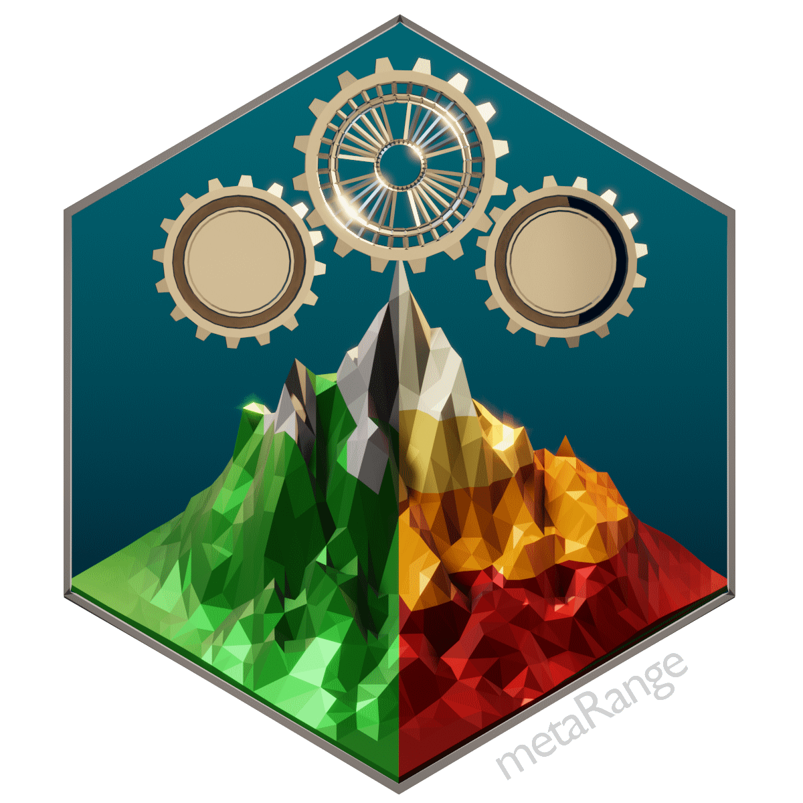
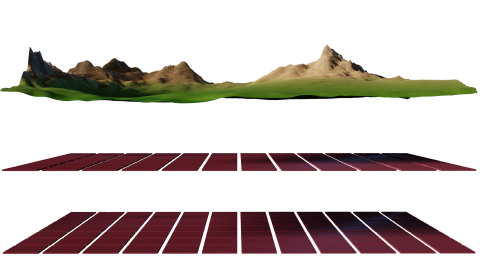
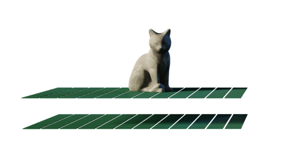
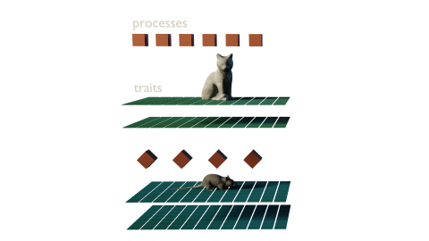
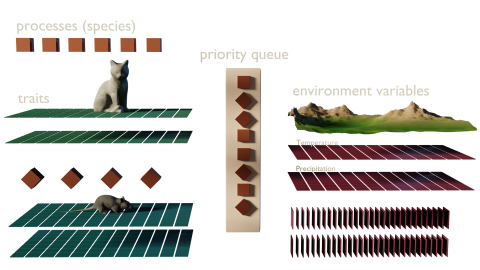

[metaRange] is a framework that allows you to build process based species distribution models.
They can include a (basically) arbitrary number of environmental factors, processes, species and species interactions.
The framework is grid based and each environmental variable is represented by a seperate raster layer.

This environment is inhabited by one or multiple species, where each population is represented by one grid cell of the environment.

Species are defined by traits (any type of biological meaningful data) and processes (mechanisms that define how the species interacts with its environment and other species).

The processes are sorted into a queue, based on a user given priority, and executed each time step.

The R package includes extensive documentation to allow users of all experience levels a quick start into building models with metaRange.
menu_bookIf you have a working R installation, you can just use:
install.packages("metaRange")
to get the latest version from CRAN.
Stefan Fallert, Lea Li, Juliano Sarmento Cabral
2024 (bioRxiv preprint)
In case of any questions, feel free to reach out via the mail provided on the University website.